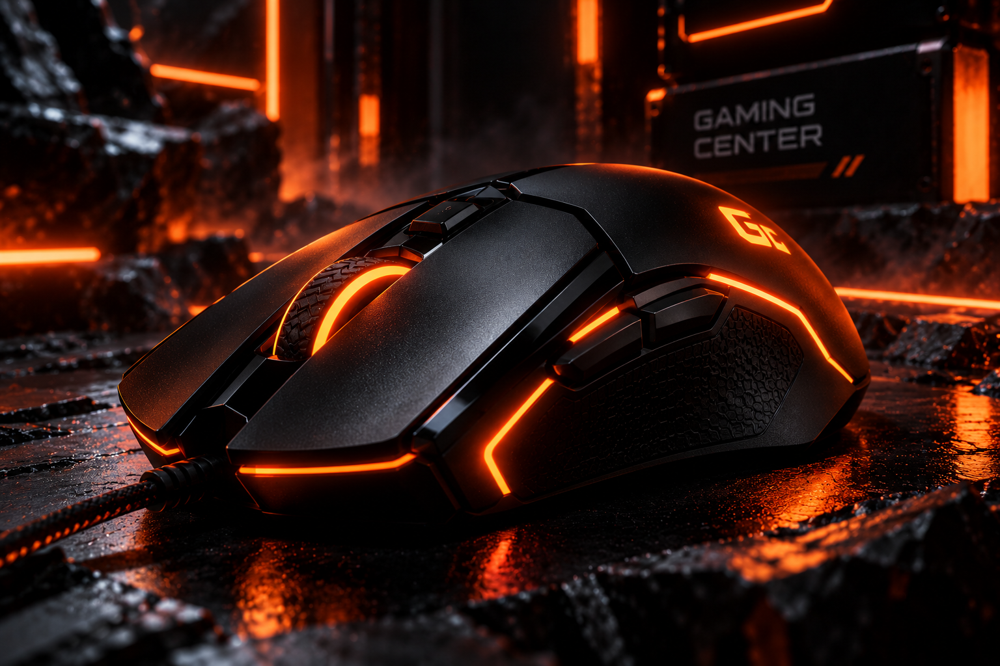
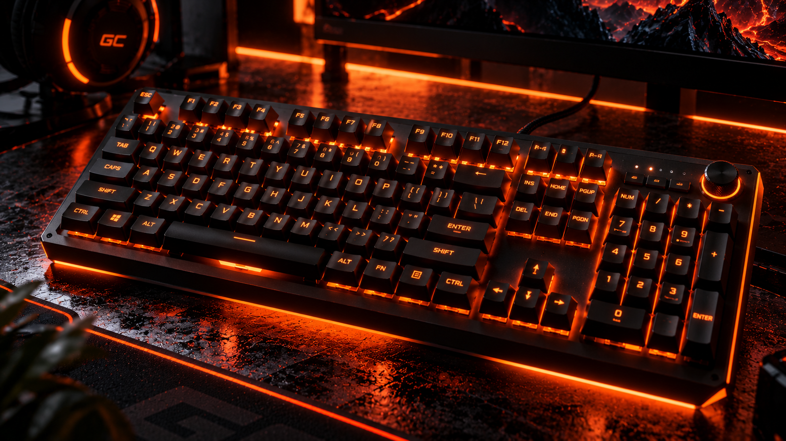
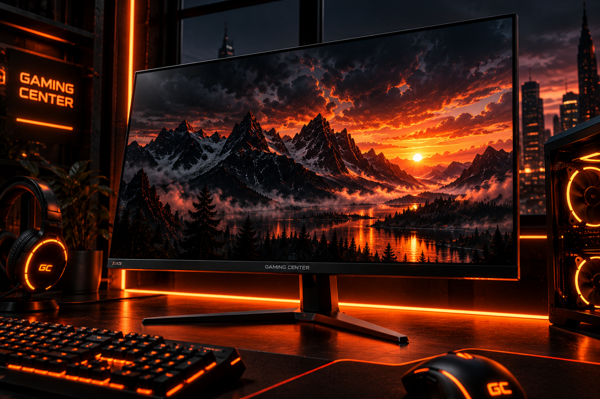
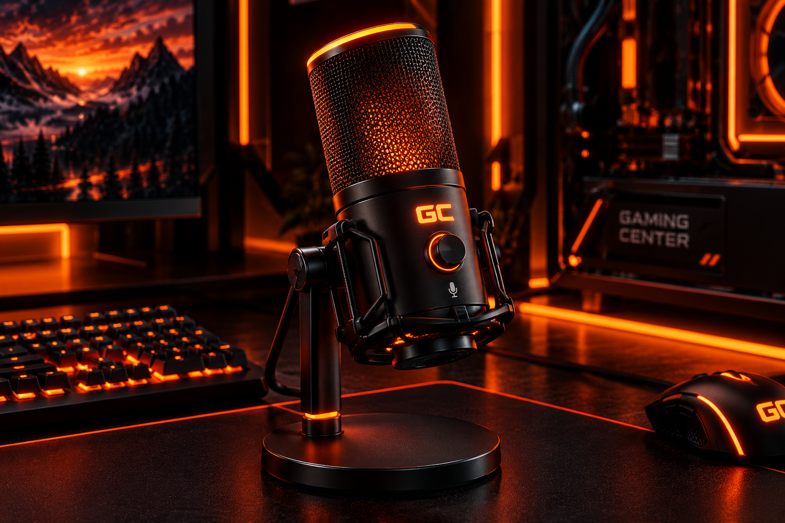
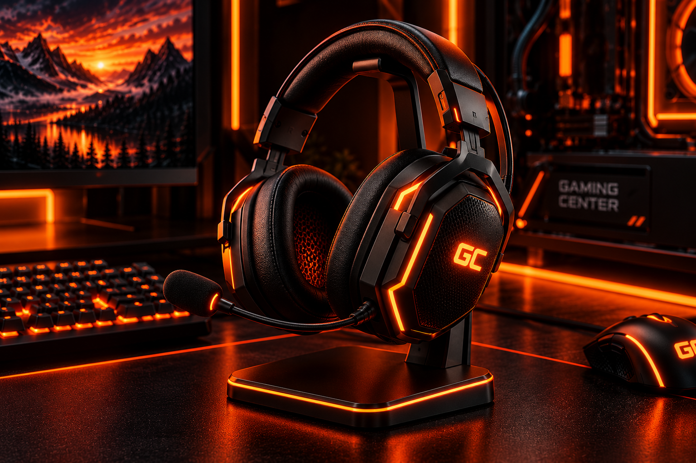
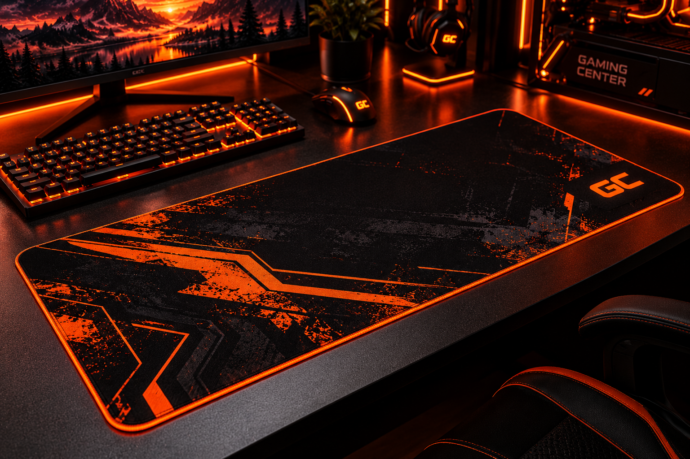

Каталог
Мышь - GC Phantom X

- Сенсор: GC Optical X26
- Разрешение: 200–26 000 DPI
- Частота опроса: 1000 Гц
- Количество кнопок: 7
- Подсветка: RGB
- Подключение: USB-A
- Длина кабеля: 1,8 м
- Вес: 68 г
- Ресурс переключателей: 80 млн нажатий
- Совместимость: Windows 10/11
Характеристики
Легкая игровая мышь с точным сенсором, настраиваемой RGB-подсветкой и дополнительными кнопками для управления игровыми действиями.
7 790 ₽
Клавиатура - GC Inferno K87

- Формат: TKL, 87 клавиш
- Тип переключателей: Механические Red
- Подсветка: RGB, 16,8 млн цветов
- Частота опроса: 1000 Гц
- Подключение: USB-C
- Кейкапы: PBT
- Корпус: Алюминий и ABS
- Anti-Ghosting: Полный
- N-Key Rollover: Да
- Дополнительные функции: Макросы, управление подсветкой
- Совместимость: Windows 10/11, macOS
Характеристики
Механическая клавиатура с компактной раскладкой, линейными переключателями и настраиваемой подсветкой. Подходит для игр и повседневной работы за компьютером.
15 690 ₽
Монитор - GC Vision 27X

- Диагональ: 27″
- Разрешение: 2560 × 1440 (QHD)
- Тип матрицы: IPS
- Частота обновления: 180 Гц
- Время отклика: 1 мс (MPRT)
- Яркость: 350 кд/м²
- Контрастность: 1000:1
- Цветовой охват: 95% DCI-P3
- Синхронизация: Adaptive-Sync
- Интерфейсы: 2 × HDMI, 1 × DisplayPort
- Крепление: VESA 100 × 100 мм
Характеристики
Монитор с разрешением QHD, высокой частотой обновления и IPS-матрицей для плавного игрового процесса, чёткого изображения и насыщенных цветов.
24 990 ₽
Микрофон - GC Inferno Mic X

- Тип: Конденсаторный
- Частота дискретизации: 96 кГц
- Разрядность: 24 бит
- Частотный диапазон: 30 Гц – 18 кГц
- Чувствительность: −38 дБ
- Подключение: USB-C
- Подсветка: RGB, 16,8 млн цветов
- Управление: Регулятор громкости и Mute
- Комплектация: Микрофон, настольная подставка, кабель
Характеристики
Чистый звук для голосового общения, стримов и записи голоса. Кардиоидная направленность помогает сосредоточиться на звуке перед микрофоном.
8 960 ₽
Наушники — GC Phantom H7

- Тип: Закрытые, полноразмерные
- Диаметр динамиков: 50 мм
- Частотный диапазон: 20 Гц – 20 кГц
- Сопротивление: 32 Ом
- Чувствительность: 108 дБ
- Микрофон: Съёмный, направленный
- Подключение: USB-C и 3,5 мм
- Подсветка: RGB
- Длина кабеля: 2 м
- Вес: 285 г
- Совместимость: ПК, PlayStation, ноутбуки
Характеристики
Объёмный игровой звук, мягкие амбушюры и съёмный микрофон для командного общения. Подходит для игр, музыки и повседневного использования.
8 990 ₽
Игровой коврик — GC Inferno Pad XL

- Размеры: 900 × 400 мм
- Толщина: 4 мм
- Материал поверхности: Ткань с микротекстурой
- Основание: Нескользящая резина
- Края: Усиленная прошивка
- Тип поверхности: Speed Control
- Подсветка: Нет
- Цвет: Чёрный с оранжевым принтом
- Влагозащита: Водоотталкивающее покрытие
- Совместимость: Оптические и лазерные мыши
Характеристики
Тканевая поверхность обеспечивает плавное скольжение мыши, а резиновое основание помогает коврику оставаться на месте.
2 490 ₽